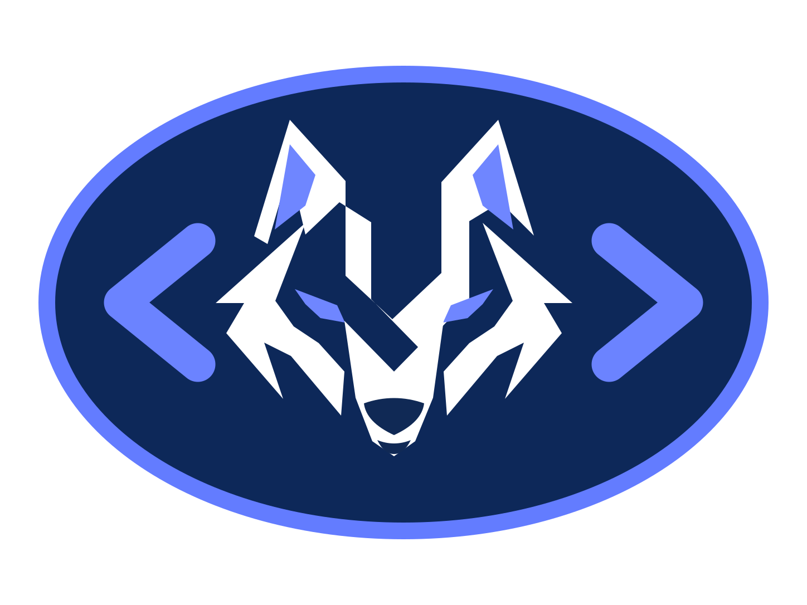

.nqr everywhere
Source files use .nqr, projects use project.nqr, locks use noqeri.lock, and the CLI is noqeri.

A statically typed, native-oriented language with a straightforward syntax, explicit compiler pipeline, interpreter, Linux x86-64 native backend, project tooling and editor integration.
function add(a: int, b: int): int {
return a + b
}
print("Hello from noqeri")
print(add(10, 20))Source files use .nqr, projects use project.nqr, locks use noqeri.lock, and the CLI is noqeri.
Lexer, parser, static checking, NIR, optimizer, interpreter, native backend and LSP foundation live in one explicit toolchain.
The same wolf/code logo is the site mark and `.nqr` file-icon identity, alongside TextMate, Vim and Sublime syntax support.